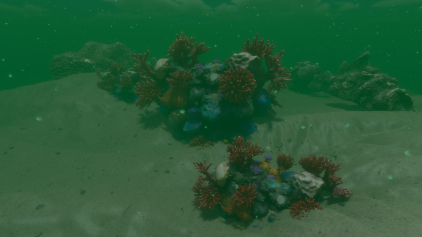

Graduation Work Research

Overview
The main idea of this graduation work is to create a simple framework so game developers can identify the right parameters to easily recreate an underwater scene that fits their theme/style goal. This will be done by first doing theoretical research, which will give the reader a basic understanding of the light interactions. Next, insights on what is usually done to simulate underwater environments by established developers will be given, which will be condensed into simple parameters that are the core of simulated underwater environments. Finally, the goal is to orient the user on which parameters have more impact on the overall theme/style goals for their game.
The main research question is how do specific lighting and volumetric parameters (fog density, color absorption, particle density, and light temperature) influence the perceived mood and plausibility of underwater scenes? From this we will split the question into simple ones for our hypotheses: How does volumetric fog affect perceived depth and realism? How does bloom and particle density and distribution influence visibility and immersion? How does directional light temperature and color adjustments modify emotional perception?
Preface
In the scope of the Graduation Work we were asked to choose a research topic relevant to our field of work and delineate a problem, explore existing research, formulate questions, organize experiments, conduct thorough investigations, and propose optimal and innovative solutions.
The broad topic I chose was: Underwater Lighting - Use rendering, lighting and material tricks to create as believable underwater lighting as possible (Light fall off, god rays, caustics, bloom, reflections). The goal was to research how this could be done and find a way to quantify the result of the use-case, so one can compare it to real life shots.
I chose this topic because I was always fascinated with underwater scenes in games, and how they made them so believable and immersive. Although the scope of this research work doesn't allow for a comprehensive study of all aspects that encompass the creation of underwater scenes, it allowed me to better understand the main concepts and the physical behaviors that they try to simulate.
The topic I settled on later into the research work was: How do specific lighting parameters influence the perceived mood and realism of underwater scenes in real-time rendering? This came as a suggestion from the coordinator during one of the first meetings when discussing our topics.
Gallery